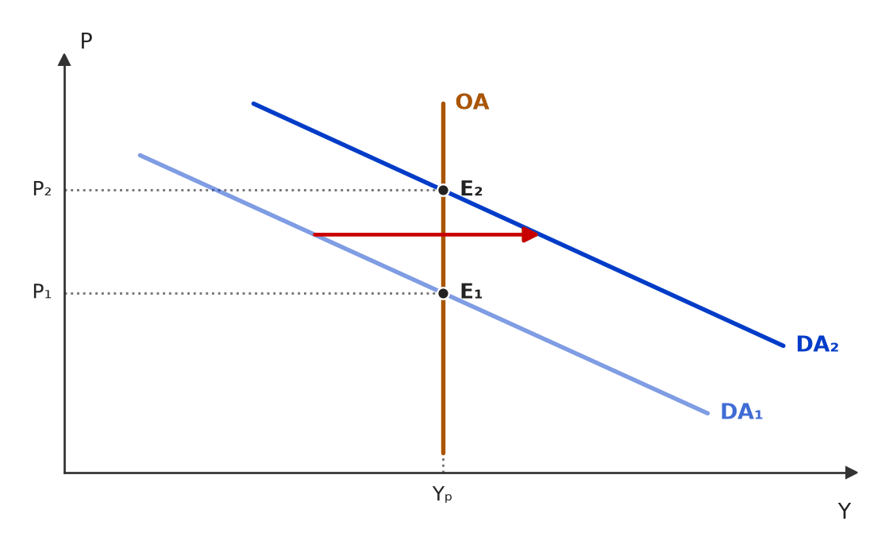
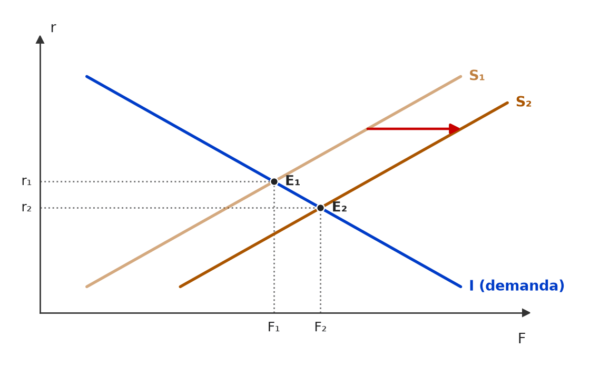
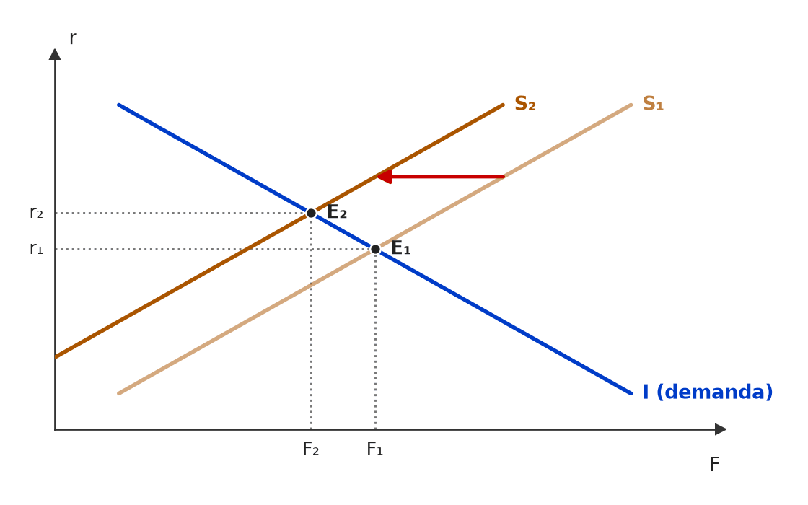
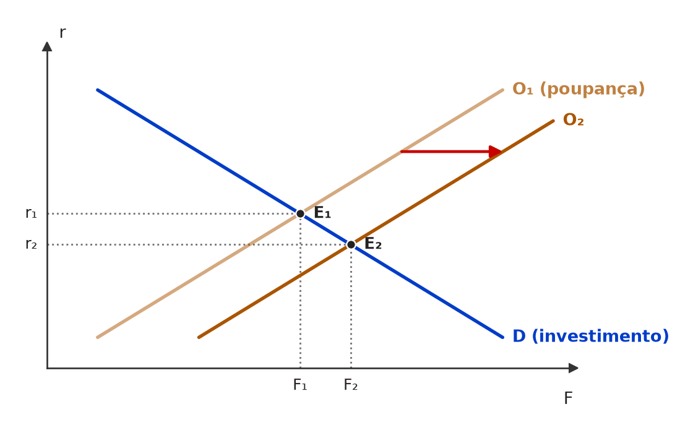
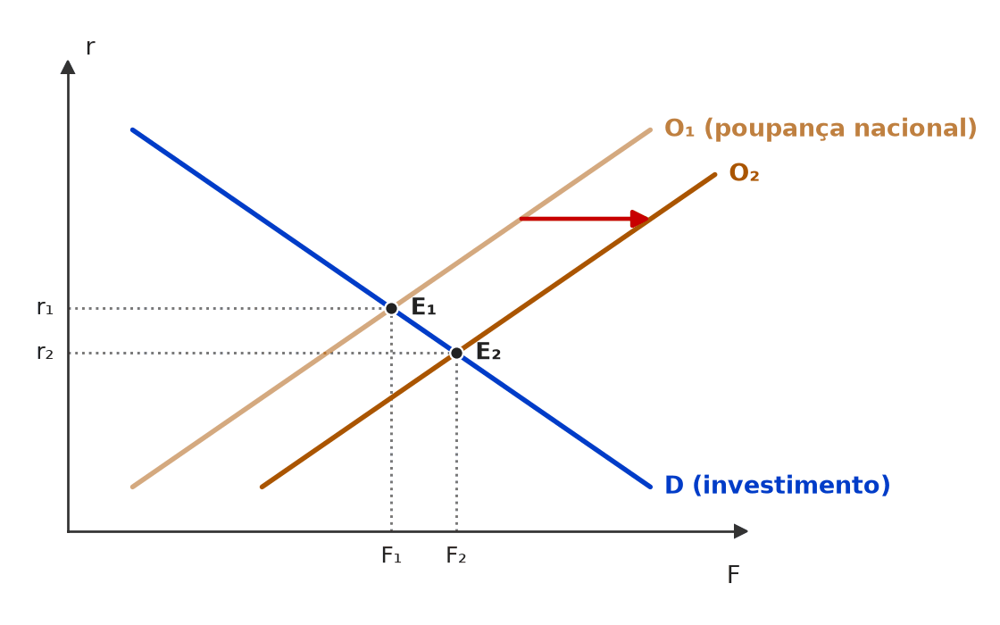
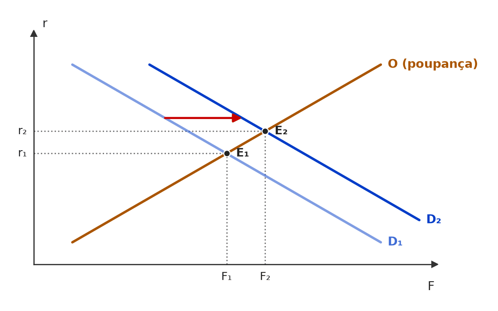
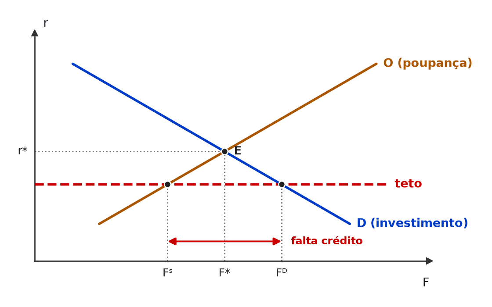

[C/E - CEBRASPE › IRBr/CACD/2026 › Modelo clássico]Considere uma economia descrita pelo sistema de equações a seguir, em tempo contínuo. A respeito dessa economia, julgue o item que se segue. Função de produção agregada: Y = F(K, N), com FK > 0, FN > 0, FKN > 0, FNN < 0 e FKK < 0, em que Fi é a primeira derivada da função de produção com relação ao insumo i, e Fii é a segunda derivada da função de produção com relação ao insumo i Demanda de trabalho em termos reais: w/P = FN(K, N) Função investimento: I = I(q(K, N, r − π) − 1), I′ < 0, em que I′ é a derivada do investimento em relação à taxa de juros Função consumo: C = C(Y − T), 0 < C′ < 1, em que C′ é a derivada do consumo em relação à renda disponível Equilíbrio no mercado de bens: Y = C + I + G + δK (5) Equilíbrio monetário: M/P = m(Y, r) (6) Em que Y é o produto, N o emprego, K o estoque de capital, w o salário nominal, P o nível geral de preços, I o investimento, q o Q de Tobin, r a taxa nominal de juros, π a taxa de inflação, C o consumo, T os tributos autônomos, G os gastos autônomos do governo, m(Y, r) a demanda real por moeda, M o estoque nominal de moeda e δK a taxa de depreciação do estoque de capital. Considere, ainda, um regime em que: o governo (via Banco Central) controla exogenamente a quantidade de moeda M; o estoque de capital é constante no tempo. Item: O sistema exibe a chamada dicotomia clássica: com o estoque de capital (K) dado, as variáveis reais (Y, L, w/P, r − π, C, I) são determinadas exclusivamente pelo bloco real (função de produção, mercado de trabalho, comportamento de consumo e investimento e política fiscal), sendo o nível de preços P ajustado de forma a compatibilizar o equilíbrio monetário M / P = m(Y, r), para um dado M. | ❌ ERRADO O sistema exibe a chamada dicotomia clássica: com o estoque de capital (K) dado, as variáveis reais (Y, L, w/P, r − π, C, I) são determinadas exclusivamente pelo bloco real (função de produção, mercado de trabalho, comportamento de consumo e investimento e política fiscal), sendo o nível de preços P ajustado de forma a compatibilizar o equilíbrio monetário M / P = m(Y, r), para um dado M. 🎯 Em poucas palavras: O modelo só tem a demanda de trabalho, com salário nominal w dado. Então P altera w/P, o emprego e o produto: preços e moeda afetam variáveis reais, e não há dicotomia clássica. 📖 Destrinchando o tema:
🧐 Dissecando a redação do item: [troca de conceito · extrapolação] O item descreve com perfeição a dicotomia de manual e a aplica a um sistema que não tem a peça que a sustenta (oferta de trabalho com salário flexível). O trabalho do candidato é inventariar as equações: w aparece como dado, e P entra no salário real. 🔥 O bloco de 2026 explorou o mesmo sistema em vários itens (neutralidade da moeda, choque de salário nominal, crowding out). 😈 Para dificultar:
✍️ Reescrita correta: O sistema não exibe a chamada dicotomia clássica: com o estoque de capital (K) dado, as variáveis reais (Y, L, w/P, r − π, C, I) não são determinadas exclusivamente pelo bloco real (função de produção, mercado de trabalho, comportamento de consumo e investimento e política fiscal), porque, com o salário nominal w dado, o nível de preços P — determinado em conjunto com o equilíbrio monetário M / P = m(Y, r) — altera o salário real, o emprego e o produto. |
[C/E - IDEG – Prof. Bozan › Pré-TPS/2026 › Modelo clássico]Julgue o item a seguir como certo ou errado, com base nos conceitos de política econômica e de intervenção governamental nos contextos keynesiano e clássico. Item: Na teoria clássica, a flexibilidade dos preços e dos salários garante que uma economia se reequilibre de forma natural, sem necessidade de intervenção estatal, mesmo em tempos de crise, visto que essa flexibilidade impulsiona os ajustes necessários para alcançar o pleno emprego. | ✅ CERTO Na teoria clássica, a flexibilidade dos preços e dos salários garante que uma economia se reequilibre de forma natural, sem necessidade de intervenção estatal, mesmo em tempos de crise, visto que essa flexibilidade impulsiona os ajustes necessários para alcançar o pleno emprego. 🎯 Em poucas palavras: É o autoajuste clássico: salários, preços e juros flexíveis eliminam excessos de oferta e de demanda e levam a economia de volta ao pleno emprego, sem o Estado. 📖 Destrinchando o tema:
🧐 Dissecando a redação do item: [paráfrase fiel] Retrato fiel do pensamento clássico. O “mesmo em tempos de crise” e o “garante” parecem fortes, mas são a tese da escola, delimitada pelo “na teoria clássica”. A banca fabrica o ERRADO trocando o ator (“na teoria keynesiana…”) ou incluindo a necessidade de estímulo estatal. 😈 Para dificultar:
|
[C/E - Armstrong › Pré-TPS/2026 › Modelo clássico]Acerca do modelo clássico de determinação da renda, julgue o item a seguir. Item: No modelo clássico, caracterizado pela flexibilidade de preços e salários, a curva de Oferta Agregada é vertical no nível de pleno emprego. Consequentemente, políticas fiscais expansionistas resultam apenas em aumento do nível de preços e da taxa de juros (crowding out total), sem afetar o produto real. | ✅ CERTO No modelo clássico, caracterizado pela flexibilidade de preços e salários, a curva de Oferta Agregada é vertical no nível de pleno emprego. Consequentemente, políticas fiscais expansionistas resultam apenas em aumento do nível de preços e da taxa de juros (crowding out total), sem afetar o produto real. 🎯 Em poucas palavras: Com a OA vertical, deslocar a demanda só move preços; nos fundos emprestáveis, os juros sobem até o investimento privado cair o mesmo que o gasto público subiu: crowding out total. 📖 Destrinchando o tema:
📈 No gráfico:  Com a oferta agregada vertical no produto de pleno emprego, a expansão fiscal desloca a demanda agregada (DA₁ → DA₂) e todo o ajuste ocorre no nível de preços (P₁ → P₂): o produto continua em Yₚ. 🧐 Dissecando a redação do item: [paráfrase fiel] O item encadeia hipótese (flexibilidade), forma da OA (vertical) e consequência (crowding out total) sem erro. O “apenas” assusta, mas é exatamente o que a OA vertical implica. 🔥 A banca troca “vertical” por “horizontal” ou “crowding out total” por “parcial” para fabricar o ERRADO. 😈 Para dificultar:
|
[C/E - Nabuco › Modelo clássico]Em relação à teoria macroeconômica, julgue (C ou E) o item a seguir. Item: A taxa de juros, para o modelo clássico, é determinada pela produtividade marginal do capital e pela preferência intertemporal dos indivíduos; tal análise difere da perspectiva de Keynes, que analisa a taxa de juros como resultante da preferência por liquidez, dada a oferta de moeda. | ✅ CERTO A taxa de juros, para o modelo clássico, é determinada pela produtividade marginal do capital e pela preferência intertemporal dos indivíduos; tal análise difere da perspectiva de Keynes, que analisa a taxa de juros como resultante da preferência por liquidez, dada a oferta de moeda. 🎯 Em poucas palavras: Clássicos: juro é variável real, fixada por investimento (produtividade do capital) e poupança (paciência). Keynes: juro é fenômeno monetário, fixado pela demanda e oferta de moeda. 📖 Destrinchando o tema:
🧐 Dissecando a redação do item: [paráfrase fiel] O item contrapõe corretamente as duas teorias. O risco é a troca de atores: a banca costuma atribuir a preferência pela liquidez aos clássicos ou a determinação real do juro a Keynes. Associe: real = clássico; monetário = Keynes. 😈 Para dificultar:
|
[C/E - Nabuco › Pré-TPS/2024 › Modelo clássico]Acerca dos indicadores do mercado de trabalho, conceitos e tipos de desemprego, julgue o item a seguir. Item: O pagamento de um salário real de equilíbrio no modelo macroeconômico clássico permite afirmar que a economia continua em pleno emprego, isso é possível mesmo quando ocorre uma demora na aquisição de um novo emprego ou mesmo quando algumas pessoas preferem ficar desempregadas ao nível de salário vigente. Nessas condições pode-se afirmar que, para o modelo clássico, o mercado de trabalho garante o pleno emprego, mesmo com desemprego friccional e voluntário. | ✅ CERTO O pagamento de um salário real de equilíbrio no modelo macroeconômico clássico permite afirmar que a economia continua em pleno emprego, isso é possível mesmo quando ocorre uma demora na aquisição de um novo emprego ou mesmo quando algumas pessoas preferem ficar desempregadas ao nível de salário vigente. Nessas condições pode-se afirmar que, para o modelo clássico, o mercado de trabalho garante o pleno emprego, mesmo com desemprego friccional e voluntário. 🎯 Em poucas palavras: Pleno emprego não é desemprego zero: é ausência de desemprego involuntário. O friccional (busca) e o voluntário (recusa do salário vigente) convivem com ele. 📖 Destrinchando o tema:
🧐 Dissecando a redação do item: [contraintuitivo] Parece contraditório “pleno emprego com desemprego”, e é nisso que o item aposta. A chave é a definição: pleno emprego exclui só o involuntário. A banca fabrica o ERRADO incluindo o involuntário ou dizendo que pleno emprego exige desemprego nulo. 😈 Para dificultar:
|
[C/E - Nabuco › Pré-TPS/2024 › Modelo clássico]Em relação à teoria macroeconômica, julgue o item a seguir. Item: Segundo a macroeconomia clássica, a taxa real de juros resulta do equilíbrio entre a oferta e a demanda de moeda. | ❌ ERRADO Segundo a macroeconomia clássica, a taxa real de juros resulta do equilíbrio entre a oferta e a demanda de moeda. 🎯 Em poucas palavras: No modelo clássico, o juro real nasce no mercado de fundos emprestáveis (poupança = investimento). Oferta e demanda de moeda decidem o nível de preços — e, em Keynes, os juros. 📖 Destrinchando o tema:
🧐 Dissecando a redação do item: [troca de conceito] O item troca o mercado onde o juro se forma: atribui aos clássicos a teoria monetária do juro, que é a keynesiana. Pista: “taxa real” + “clássica” → pense em poupança e investimento, nunca em moeda. 😈 Para dificultar:
✍️ Reescrita correta: Segundo a macroeconomia clássica, a taxa real de juros resulta do equilíbrio entre a oferta e a demanda de fundos emprestáveis (poupança e investimento). |
❌ [C/E - Simulado Sapientia › Set/2024 › Modelo clássico]Julgue o item a seguir, relativo aos efeitos da política fiscal em uma economia fechada. [Enunciado reconstruído: na fonte, a frente era só uma imagem, não preservada.] Item: Quando uma economia fechada se encontra em pleno emprego, o aumento dos gastos governamentais provocará redução equivalente no consumo privado. | ❌ ERRADO Quando uma economia fechada se encontra em pleno emprego, o aumento dos gastos governamentais provocará redução equivalente no consumo privado. 🎯 Em poucas palavras: Em pleno emprego o produto não cresce: para Y = C + I + G fechar, algum componente privado tem de cair na mesma medida — mas não necessariamente o consumo; tipicamente é o investimento, via juros (crowding out). 📖 Destrinchando o tema:
🧐 Dissecando a redação do item: [restrição indevida · meia-verdade] A identidade garante que algo cai na mesma medida; o item escolhe arbitrariamente quem cai. “Equivalente” está certo; o erro está no destinatário único (“no consumo privado”). 😈 Para dificultar:
✍️ Reescrita correta: Quando uma economia fechada se encontra em pleno emprego, o aumento dos gastos governamentais provocará redução equivalente na demanda privada (consumo e/ou investimento), não necessariamente no consumo privado. |
[C/E - Prof. Rodrigo Teixeira › Intensivo Pré-TPS/2023 › Modelo clássico]Acerca da relação entre poupança e investimento e dos modelos de crescimento econômico, julgue a afirmação. Item: No mercado de fundos emprestáveis, a elevação de superávits fiscais pelo governo tende a reduzir a taxa de juros, elevando o investimento. | ✅ CERTO No mercado de fundos emprestáveis, a elevação de superávits fiscais pelo governo tende a reduzir a taxa de juros, elevando o investimento. 🎯 Em poucas palavras: Superávit maior = poupança pública maior: a oferta de fundos se desloca para a direita, o juro cai e o investimento privado sobe (crowding in). 📖 Destrinchando o tema:
📈 No gráfico:  Superávit fiscal maior = mais poupança pública: a oferta de fundos (S) desloca-se para a direita, os juros caem (r₁ → r₂) e a quantidade de fundos que financia o investimento privado aumenta (F₁ → F₂) — crowding in. 🧐 Dissecando a redação do item: [paráfrase fiel · modulador relativo] Reproduz o resultado-padrão do modelo e se protege com “tende a”. A armadilha é confundir superávit com déficit e aplicar o crowding out na direção errada. 😈 Para dificultar:
|
[C/E - Prof. Rodrigo Teixeira › Intensivo Pré-TPS/2023 › Modelo clássico]A respeito das relações entre consumo, poupança e crescimento econômico, julgue o item a seguir. Item: No mercado de fundos emprestáveis, uma elevação do consumo do governo levará a um aumento da renda e da poupança. | ❌ ERRADO No mercado de fundos emprestáveis, uma elevação do consumo do governo levará a um aumento da renda e da poupança. 🎯 Em poucas palavras: Nesse modelo a renda é a de pleno emprego (dada); mais G sem mais impostos reduz a poupança pública e, com ela, a nacional — os juros sobem e o investimento privado cai (crowding out). 📖 Destrinchando o tema:
🧐 Dissecando a redação do item: [troca de conceito · nexo indevido] O item aplica o raciocínio do multiplicador (G↑ → Y↑ → S↑) dentro de um modelo em que a renda é fixa. A expressão “no mercado de fundos emprestáveis” é a pista: ali G compete por poupança, não cria renda. 😈 Para dificultar:
✍️ Reescrita correta: No mercado de fundos emprestáveis, uma elevação do consumo do governo levará a uma redução da poupança nacional, sem aumento da renda. |
[C/E - Prof. Rodrigo Teixeira › Intensivo Pré-TPS/2023 › Modelo clássico]Avalie a afirmação abaixo, relativa ao modelo clássico e ao modelo IS-LM. Item: Havendo flexibilidade de preços e salários, o modelo clássico do mercado de trabalho implica pleno-emprego, excluindo portanto a possibilidade de desemprego friccional. | ❌ ERRADO Havendo flexibilidade de preços e salários, o modelo clássico do mercado de trabalho implica pleno-emprego, excluindo portanto a possibilidade de desemprego friccional. 🎯 Em poucas palavras: O pleno emprego clássico elimina o desemprego involuntário, não o friccional, que decorre do tempo de busca entre trabalhadores e vagas. 📖 Destrinchando o tema:
🧐 Dissecando a redação do item: [troca de conceito · extrapolação] A primeira oração é a tese clássica correta; o erro está na conclusão enxertada com “portanto”, que estende a exclusão do desemprego involuntário ao friccional. Conectivo conclusivo no fim de item é lugar clássico de extrapolação. 😈 Para dificultar:
✍️ Reescrita correta: Havendo flexibilidade de preços e salários, o modelo clássico do mercado de trabalho implica pleno-emprego, sem excluir, contudo, a possibilidade de desemprego friccional. |
[C/E - Prof. Rodrigo Teixeira › Intensivo Pré-TPS/2023 › Modelo clássico]Avalie a afirmação abaixo, relativa ao modelo clássico e ao modelo IS-LM. Item: No modelo clássico, o conhecimento da função de produção e da oferta de moeda é condição suficiente para a determinação do produto de pleno-emprego. | ❌ ERRADO No modelo clássico, o conhecimento da função de produção e da oferta de moeda é condição suficiente para a determinação do produto de pleno-emprego. 🎯 Em poucas palavras: O produto clássico sai do lado real: mercado de trabalho (oferta e demanda) fixa o emprego N*, e a função de produção converte N* em Y*. A moeda só determina o nível de preços. 📖 Destrinchando o tema:
🧐 Dissecando a redação do item: [troca de conceito · meia-verdade] Metade certa (função de produção é necessária) e metade trocada: no lugar do mercado de trabalho, a banca pôs a variável que, no clássico, justamente não afeta o produto. “Condição suficiente” obriga a checar se falta algo e se sobra algo. 😈 Para dificultar:
✍️ Reescrita correta: No modelo clássico, o conhecimento da função de produção e das curvas de oferta e demanda de trabalho é condição suficiente para a determinação do produto de pleno-emprego. |
[C/E - Prof. Rodrigo Teixeira › Intensivo Pré-TPS/2023 › Modelo clássico]Avalie a afirmação abaixo, relativa ao modelo clássico e ao modelo IS-LM. Item: Um imposto sobre os rendimentos de aplicações financeiras, no mercado de poupança e investimento, levará a um deslocamento para a direita da poupança agregada e redução da taxa de juros e dos investimentos. | ❌ ERRADO Um imposto sobre os rendimentos de aplicações financeiras, no mercado de poupança e investimento, levará a um deslocamento para a direita da poupança agregada e redução da taxa de juros e dos investimentos. 🎯 Em poucas palavras: Tributar o rendimento das aplicações reduz o retorno líquido de poupar: a poupança se desloca para a esquerda, o juro sobe e o investimento cai. O item acerta só a queda do investimento. 📖 Destrinchando o tema:
📈 No gráfico:  O imposto sobre os rendimentos das aplicações reduz o retorno líquido de poupar: a oferta de fundos (S) desloca-se para a ESQUERDA, os juros sobem (r₁ → r₂) e o investimento cai (F₁ → F₂). 🧐 Dissecando a redação do item: [inversão · meia-verdade] Duas direções invertidas (direita, redução dos juros) e uma conclusão correta no fim (queda do investimento). O teste rápido é a coerência: S para a direita nunca reduz investimento. 😈 Para dificultar:
✍️ Reescrita correta: Um imposto sobre os rendimentos de aplicações financeiras, no mercado de poupança e investimento, levará a um deslocamento para a esquerda da poupança agregada e elevação da taxa de juros e redução dos investimentos. |
[C/E - Nabuco › Pré-TPS/2022 › Modelo clássico]A publicação da obra A Teoria Geral do Emprego, do Juro e da Moeda, em 1936, por John Maynard Keynes, foi fundamental para que os economistas se deparassem com duas das principais abordagens acerca da relação entre investimento e poupança. As correntes do pensamento econômico apresentam visões distintas sobre as relações entre o investimento (I) e a poupança (S). Considerando o exposto, julgue o item seguinte. Item: O comportamento dos poupadores não condiciona a realização de investimentos, de acordo com a abordagem clássica. | ❌ ERRADO O comportamento dos poupadores não condiciona a realização de investimentos, de acordo com a abordagem clássica. 🎯 Em poucas palavras: Para os clássicos, a poupança prévia financia o investimento: o que os poupadores decidem ofertar no mercado de fundos condiciona quanto se investe. Quem inverte a causalidade é Keynes. 📖 Destrinchando o tema:
🧐 Dissecando a redação do item: [inversão · troca de ator] Uma negação (“não condiciona”) transforma a tese clássica na keynesiana. Em itens que opõem as duas escolas, pergunte sempre: quem causa quem, e por qual variável (juros ou renda)? 😈 Para dificultar:
✍️ Reescrita correta: O comportamento dos poupadores condiciona a realização de investimentos, de acordo com a abordagem clássica. |
[C/E - Nabuco › Pré-TPS/2022 › Modelo clássico]A publicação da obra A Teoria Geral do Emprego, do Juro e da Moeda, em 1936, por John Maynard Keynes, foi fundamental para que os economistas se deparassem com duas das principais abordagens acerca da relação entre investimento e poupança. As correntes do pensamento econômico apresentam visões distintas sobre as relações entre o investimento (I) e a poupança (S). Considerando o exposto, julgue o item seguinte. Item: A taxa de juros, para o modelo clássico, é determinada pela produtividade marginal do capital e pela preferência intertemporal dos indivíduos; tal análise difere da perspectiva de Keynes, que analisa a taxa de juros como resultante da preferência por liquidez, dada a oferta de moeda. | ✅ CERTO A taxa de juros, para o modelo clássico, é determinada pela produtividade marginal do capital e pela preferência intertemporal dos indivíduos; tal análise difere da perspectiva de Keynes, que analisa a taxa de juros como resultante da preferência por liquidez, dada a oferta de moeda. 🎯 Em poucas palavras: Juro clássico = fenômeno real (produtividade × paciência, em S = I); juro keynesiano = fenômeno monetário (preferência pela liquidez × oferta de moeda). 📖 Destrinchando o tema:
🧐 Dissecando a redação do item: [literalidade · paráfrase fiel] O item enfileira os determinantes corretos de cada escola e só testa se o candidato não os embaralha. A armadilha seria trocar os pares (“para Keynes, produtividade marginal do capital…”). 😈 Para dificultar:
|
[C/E - Nabuco › Pré-TPS/2022 › Modelo clássico]A publicação da obra A Teoria Geral do Emprego, do Juro e da Moeda, em 1936, por John Maynard Keynes, foi fundamental para que os economistas se deparassem com duas das principais abordagens acerca da relação entre investimento e poupança. As correntes do pensamento econômico apresentam visões distintas sobre as relações entre o investimento (I) e a poupança (S). Considerando o exposto, julgue o item seguinte. Item: O investimento, no mercado de fundos emprestáveis, é determinado pela poupança, e a taxa de juros é responsável pela igualdade entre poupança e investimento (S = I), no modelo clássico, de acordo com a Lei de Say. | ⚪ ANULADO O investimento, no mercado de fundos emprestáveis, é determinado pela poupança, e a taxa de juros é responsável pela igualdade entre poupança e investimento (S = I), no modelo clássico, de acordo com a Lei de Say. 🎯 Em poucas palavras: Até “modelo clássico” o item é correto; o problema é atribuir o mecanismo dos fundos emprestáveis à Lei de Say, que não diz isso literalmente — daí a anulação. ⚠️ Gabarito contestável: Item anulado. A parte sobre fundos emprestáveis e S = I é incontroversa. O acréscimo “de acordo com a Lei de Say” é ambíguo: lido como “a Lei de Say enuncia isso”, o item seria ERRADO (Say trata de oferta que cria demanda, não de juros); lido como “de modo coerente com a Lei de Say”, seria CERTO, porque o ajuste pelo juro é justamente o que garante que a poupança volte ao circuito como investimento. 📖 Destrinchando o tema:
🧐 Dissecando a redação do item: [outro: atribuição ambígua] Um item correto ganhou uma cauda de autoridade (“de acordo com…”) que pode ser lida como fonte literal ou como compatibilidade. Quando a banca cola um nome próprio no fim de uma tese, confira se aquele autor ou lei enunciou exatamente aquilo. 😈 Para dificultar:
✍️ Reescrita correta: O investimento, no mercado de fundos emprestáveis, é determinado pela poupança, e a taxa de juros é responsável pela igualdade entre poupança e investimento (S = I), no modelo clássico, em consonância com a Lei de Say. |
[C/E - Nabuco › Pré-TPS/2022 › Modelo clássico]Em relação à teoria macroeconômica, julgue o item a seguir. Item: De acordo com a teoria clássica, a economia funciona no nível de pleno emprego; e o desemprego é o resultado da recusa dos trabalhadores de trabalharem pelo salário vigente. Segundo essa corrente teórica, o desemprego pode ser classificado como voluntário ou friccional. | ✅ CERTO De acordo com a teoria clássica, a economia funciona no nível de pleno emprego; e o desemprego é o resultado da recusa dos trabalhadores de trabalharem pelo salário vigente. Segundo essa corrente teórica, o desemprego pode ser classificado como voluntário ou friccional. 🎯 Em poucas palavras: Com salários flexíveis, o mercado de trabalho se equilibra no pleno emprego; o desemprego que sobra é voluntário (não aceita o salário vigente) ou friccional (transição entre empregos). O involuntário é a novidade de Keynes. 📖 Destrinchando o tema:
🧐 Dissecando a redação do item: [literalidade] Reproduz a classificação clássica dos manuais. A tentação é estranhar “pleno emprego” ao lado de “desemprego” e marcar ERRADO; o risco real está em trocar a dupla por “involuntário”. 😈 Para dificultar:
|
[C/E - Prof. Rodrigo Teixeira › Macro – Aula 2 › Modelo clássico]Acerca do mercado de fundos emprestáveis, julgue o item a seguir (C ou E). Item: A redução do imposto de renda sobre aplicações financeiras teria como efeito a elevação da poupança e, consequentemente, do investimento. | ✅ CERTO A redução do imposto de renda sobre aplicações financeiras teria como efeito a elevação da poupança e, consequentemente, do investimento. 🎯 Em poucas palavras: Menos imposto sobre o rendimento eleva o retorno líquido de poupar: a oferta de fundos se desloca para a direita, os juros caem e poupança e investimento sobem. 📖 Destrinchando o tema:
📈 No gráfico:  Menos imposto sobre o rendimento das aplicações eleva o retorno líquido de poupar: a oferta de fundos (poupança) se desloca para a direita (O₁ → O₂). Os juros caem (r₁ → r₂) e a quantidade de fundos poupados e investidos sobe (F₁ → F₂). 🧐 Dissecando a redação do item: [paráfrase fiel] Item de mecanismo: identificar qual curva se move. Imposto sobre o rendimento da poupança mexe na oferta; o “consequentemente” é movimento ao longo da demanda. O condicional “teria” deixa o item no plano do modelo. 😈 Para dificultar:
|
[C/E - Prof. Rodrigo Teixeira › Macro – Aula 2 › Modelo clássico]Acerca do mercado de fundos emprestáveis, julgue o item a seguir (C ou E). Item: Um ajuste fiscal, por meio da redução do gasto público, teria como efeito a redução da taxa de juros e também do investimento, e portanto não seria uma boa opção para tirar a economia de uma recessão. | ❌ ERRADO Um ajuste fiscal, por meio da redução do gasto público, teria como efeito a redução da taxa de juros e também do investimento, e portanto não seria uma boa opção para tirar a economia de uma recessão. 🎯 Em poucas palavras: Cortar gasto eleva a poupança pública: a oferta de fundos vai para a direita, os juros caem e o investimento sobe — é o crowding out ao contrário. 📖 Destrinchando o tema:
📈 No gráfico:  O corte de gastos reduz o déficit (ou amplia o superávit) e eleva a poupança pública: a oferta de fundos se desloca para a direita (O₁ → O₂). Os juros caem e o investimento privado AUMENTA (F₁ → F₂) — é o crowding out ao contrário. 🧐 Dissecando a redação do item: [meia-verdade · nexo indevido] Começa certo (juros caem) e enxerta o erro no “também”, que arrasta o investimento junto. A conclusão sobre a recessão é tirada da premissa falsa. Pista: no mesmo mercado, preço e quantidade do crédito só caem juntos se a demanda se desloca — e o ajuste mexe na oferta. 😈 Para dificultar:
✍️ Reescrita correta: Um ajuste fiscal, por meio da redução do gasto público, teria como efeito a redução da taxa de juros e o aumento do investimento |
[C/E - Prof. Rodrigo Teixeira › Macro – Aula 2 › Modelo clássico]Acerca do mercado de fundos emprestáveis, julgue o item a seguir (C ou E). Item: Uma desoneração fiscal na compra de bens de capital deslocaria para baixo e para esquerda a curva de demanda por fundos emprestáveis, levando a uma redução dos juros e aumento dos investimentos. | ❌ ERRADO Uma desoneração fiscal na compra de bens de capital deslocaria para baixo e para esquerda a curva de demanda por fundos emprestáveis, levando a uma redução dos juros e aumento dos investimentos. 🎯 Em poucas palavras: Investir fica mais barato e rentável: a demanda por fundos vai para cima e para a direita. Os juros sobem e o investimento aumenta. 📖 Destrinchando o tema:
📈 No gráfico:  O incentivo fiscal torna rentável investir mais a cada taxa de juros: a demanda por fundos se desloca para a DIREITA (D₁ → D₂). Os juros SOBEM (r₁ → r₂) e a quantidade de fundos poupados e investidos também sobe (F₁ → F₂). 🧐 Dissecando a redação do item: [inversão] O item inverte o deslocamento e, por coerência, os juros; só o investimento sobrevive certo. Armadilha: associar “desoneração” a “custo menor” e daí a “curva para baixo”. Custo menor do bem de capital significa mais demanda por fundos. 😈 Para dificultar:
✍️ Reescrita correta: Uma desoneração fiscal na compra de bens de capital deslocaria para cima e para a direita a curva de demanda por fundos emprestáveis, levando a uma elevação dos juros e aumento dos investimentos. |
[C/E - Prof. Rodrigo Teixeira › Macro – Aula 2 › Modelo clássico]Acerca do mercado de fundos emprestáveis, julgue o item a seguir (C ou E). Item: Um tabelamento de juros, com o governo estabelecendo uma taxa máxima de juros abaixo da taxa de equilíbrio, pode ser eficaz em aumentar o investimento da economia, dado que os empresários poderiam financiar as compras de bens de capital a um custo mais baixo. | ❌ ERRADO Um tabelamento de juros, com o governo estabelecendo uma taxa máxima de juros abaixo da taxa de equilíbrio, pode ser eficaz em aumentar o investimento da economia, dado que os empresários poderiam financiar as compras de bens de capital a um custo mais baixo. 🎯 Em poucas palavras: Teto abaixo do equilíbrio reduz a oferta de fundos: vale o lado curto do mercado, e o volume de crédito — logo, o investimento — cai, com racionamento. 📖 Destrinchando o tema:
📈 No gráfico:  Com o teto de juros abaixo do equilíbrio, os tomadores querem Fᴰ, mas os poupadores só ofertam Fˢ: vale o lado curto do mercado, e o volume de crédito — logo, o investimento — CAI de F* para Fˢ, com racionamento do excesso de demanda. 🧐 Dissecando a redação do item: [nexo indevido · inversão] O item parte de uma verdade parcial (o crédito fica mais barato para quem o obtém) e conclui o oposto do efeito agregado. Toda questão de tabelamento pede o mesmo teste: qual lado do mercado fica curto? 😈 Para dificultar:
✍️ Reescrita correta: Um tabelamento de juros, com o governo estabelecendo uma taxa máxima de juros abaixo da taxa de equilíbrio, tende a reduzir o investimento da economia, ainda que os empresários que obtêm crédito possam financiar as compras de bens de capital a um custo mais baixo. |
[C/E - Prof. Rodrigo Teixeira › Macro – Aula 5 › Modelo clássico]A respeito do modelo clássico, julgue o item a seguir (C ou E). Item: O produto e nível de emprego da economia são determinados pelo lado da demanda. Desta forma, uma política fiscal expansionista pode trazer maior crescimento econômico. | ❌ ERRADO O produto e nível de emprego da economia são determinados pelo lado da demanda. Desta forma, uma política fiscal expansionista pode trazer maior crescimento econômico. 🎯 Em poucas palavras: No modelo clássico, produto e emprego vêm do lado da oferta (trabalho, capital, tecnologia). A expansão fiscal só muda a composição do produto, via juros: crowding out total. 📖 Destrinchando o tema:
🧐 Dissecando a redação do item: [troca de conceito · troca de ator] O item atribui ao modelo clássico a tese central keynesiana (demanda determina o produto) e tira dela a conclusão keynesiana. Pista: o comando fixa o modelo clássico; qualquer frase com “determinado pela demanda” já cai. 😈 Para dificultar:
✍️ Reescrita correta: O produto e nível de emprego da economia são determinados pelo lado da oferta. Desta forma, uma política fiscal expansionista não pode trazer maior crescimento econômico. |
[C/E - Prof. Rodrigo Teixeira › Macro – Aula 5 › Modelo clássico]A respeito do modelo clássico, julgue o item a seguir (C ou E). Item: Não existe desemprego involuntário, isto é, trabalhadores buscando emprego ao nível de salário real vigente que não encontram emprego, pois os preços e salários são perfeitamente flexíveis. | ✅ CERTO Não existe desemprego involuntário, isto é, trabalhadores buscando emprego ao nível de salário real vigente que não encontram emprego, pois os preços e salários são perfeitamente flexíveis. 🎯 Em poucas palavras: Com salários flexíveis, qualquer excesso de oferta de trabalho derruba o salário real até que todos os que querem trabalhar a esse salário estejam empregados. 📖 Destrinchando o tema:
🧐 Dissecando a redação do item: [paráfrase fiel] O item define o conceito e dá a causa correta da sua ausência. O absoluto “não existe” é a hipótese do modelo, delimitado pelo comando. A banca costuma trocar “involuntário” por “friccional” ou “voluntário”, que existem mesmo no modelo clássico. 😈 Para dificultar:
|
[C/E - Prof. Rodrigo Teixeira › Macro – Aula 5 › Modelo clássico]A respeito do modelo clássico, julgue o item a seguir (C ou E). Item: A economia sempre estará no pleno emprego, exceto se houver incerteza com relação ao futuro que faça os empresários demitirem trabalhadores e não realizarem investimentos. | ❌ ERRADO A economia sempre estará no pleno emprego, exceto se houver incerteza com relação ao futuro que faça os empresários demitirem trabalhadores e não realizarem investimentos. 🎯 Em poucas palavras: A ressalva é keynesiana: incerteza radical e expectativas instáveis derrubando investimento e emprego. No modelo clássico, o pleno emprego não tem essa exceção. 📖 Destrinchando o tema:
🧐 Dissecando a redação do item: [troca de ator · meia-verdade] A 1ª oração é a tese clássica; a exceção enxertada é argumento de Keynes. 🔥 Itens sobre escolas costumam colar a tese de uma escola ao mecanismo de outra: pergunte sempre “quem diria isso?”. 😈 Para dificultar:
✍️ Reescrita correta: A economia sempre estará no pleno emprego |
[C/E - Clipping › Simuladão Clipping › Teoria quantitativa da moeda]A política monetária moderna combina instrumentos de controle da oferta de moeda com metas de inflação, buscando estabilidade econômica. Com base nesse contexto, julgue o item a seguir. Item: A teoria quantitativa da moeda, em sua versão clássica, assume que a velocidade de circulação da moeda é constante, implicando que aumentos na oferta monetária resultam proporcionalmente em aumento do nível de preços. | ✅ CERTO A teoria quantitativa da moeda, em sua versão clássica, assume que a velocidade de circulação da moeda é constante, implicando que aumentos na oferta monetária resultam proporcionalmente em aumento do nível de preços. 🎯 Em poucas palavras: Em MV = PY, com V constante e Y no pleno emprego, P varia na mesma proporção que M: dobrar a moeda dobra os preços. 📖 Destrinchando o tema:
🧐 Dissecando a redação do item: [literalidade] Item de manual. A palavra de risco é “proporcionalmente”, que só vale com V e Y constantes; o item dá a hipótese de V e o “versão clássica” garante a de Y. 🔥 A banca costuma inverter: “a TQM supõe velocidade variável” ou “a moeda afeta o produto no longo prazo”. 😈 Para dificultar:
|
❌ [C/E - Prof. Rodrigo Teixeira › Intensivo Pré-TPS/2023 › Teoria quantitativa da moeda]Com relação à oferta agregada, salários, preços e emprego, julgue a afirmativa. Item: A neutralidade da moeda significa que, no longo prazo, se o Banco Central reduzir a oferta monetária em 3 por cento, preços e salários reduzir-se-ão em 3 por cento. | ✅ CERTO A neutralidade da moeda significa que, no longo prazo, se o Banco Central reduzir a oferta monetária em 3 por cento, preços e salários reduzir-se-ão em 3 por cento. 🎯 Em poucas palavras: Moeda neutra = só mexe em variáveis nominais. Com produto e velocidade dados, MV = PY exige que P caia na mesma proporção de M; o salário nominal acompanha, e o salário real fica igual. 📖 Destrinchando o tema:
🧐 Dissecando a redação do item: [literalidade · detalhe] Exemplo numérico direto da definição. A dúvida de quem errou costuma ser “salários também?” — sim: nominais caem 3%; os reais ficam constantes. Sem o “no longo prazo”, o item ficaria vulnerável. 😈 Para dificultar:
|
[C/E - Prof. Rodrigo Teixeira › Macro – Aula 5 › Teoria quantitativa da moeda]A respeito do modelo clássico, julgue o item a seguir (C ou E). Item: A teoria quantitativa da moeda representa o lado monetário, que não tem qualquer conexão com o lado real da economia, o que é conhecido como dicotomia clássica. | ✅ CERTO A teoria quantitativa da moeda representa o lado monetário, que não tem qualquer conexão com o lado real da economia, o que é conhecido como dicotomia clássica. 🎯 Em poucas palavras: No modelo clássico, o lado real determina produto, emprego, salário real e juros; a TQM só determina o nível de preços. Essa separação é a dicotomia clássica. 📖 Destrinchando o tema:
🧐 Dissecando a redação do item: [paráfrase fiel] O “não tem qualquer conexão” parece absoluto demais, mas é a definição exata da dicotomia: dentro do modelo clássico, a separação é total. Absolutos que descrevem a hipótese de um modelo nomeado costumam ser CERTO. 😈 Para dificultar:
|
[C/E - Banca não identificada › Teoria quantitativa da moeda]Julgue o item a seguir, relativo à teoria quantitativa da moeda. Item: Sob as premissas da Teoria Quantitativa da Moeda, a moeda é apenas meio de troca, de modo que não há interdependência entre o mercado monetário e o mercado de bens e serviços. | ✅ CERTO Sob as premissas da Teoria Quantitativa da Moeda, a moeda é apenas meio de troca, de modo que não há interdependência entre o mercado monetário e o mercado de bens e serviços. 🎯 Em poucas palavras: Na TQM a moeda só serve para transacionar: ninguém a retém como reserva de valor. Ela fixa o nível de preços, mas não afeta produto, emprego nem juros — é a dicotomia clássica. 📖 Destrinchando o tema:
🧐 Dissecando a redação do item: [paráfrase fiel] O item une a premissa (moeda só como meio de troca) à consequência (dicotomia). O “apenas” e o “não há interdependência” soam absolutos, mas estão corretos dentro das premissas da TQM, que o item delimita logo no início. 😈 Para dificultar:
|